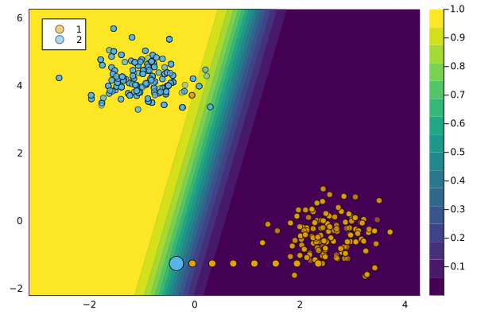

Handling Data
The package works with custom data containers that contain the input and output data as well as information about the type and mutability of features. In this tutorial, we will see how data can be prepared for use with the package.
Basic Functionality
To demonstrate the basic way to prepare data, let’s look at a standard benchmark dataset: Fisher’s classic iris dataset. We can use MLDatasets to load this data.
dataset = Iris()Our data constructor CounterfactualData needs at least two inputs: features X and targets y.
X = dataset.features
y = dataset.targetsNext, we convert the input data to a Tables.MatrixTable (following MLJ.jl) convention. Concerning the target variable, we just assign grab the first column of the data frame.
X = table(Tables.matrix(X))
y = y[:,1]Now we can feed these two ingredients to our constructor:
counterfactual_data = CounterfactualData(X, y)Under the hood, the constructor performs basic preprocessing steps. For example, the output variable y is automatically one-hot encoded:
counterfactual_data.y3×150 Matrix{Bool}:
1 1 1 1 1 1 1 1 1 1 1 1 1 … 0 0 0 0 0 0 0 0 0 0 0 0
0 0 0 0 0 0 0 0 0 0 0 0 0 0 0 0 0 0 0 0 0 0 0 0 0
0 0 0 0 0 0 0 0 0 0 0 0 0 1 1 1 1 1 1 1 1 1 1 1 1Similarly, a transformer used to scale continuous input features is automatically fitted:
counterfactual_data.dtZScoreTransform{Float64, Vector{Float64}}(4, 2, [5.843333333333335, 3.0540000000000007, 3.7586666666666693, 1.1986666666666672], [0.8280661279778629, 0.4335943113621737, 1.7644204199522617, 0.7631607417008414])Categorical Features
For the counterfactual search, it is important to distinguish between continuous and categorical features. This is because categorical features cannot be perturbed arbitrarily: they can take specific discrete values, but not just any value on the real line.
Consider the following example:
y = rand([1,0],4)
X = (
name=categorical(["Danesh", "Lee", "Mary", "John"]),
grade=categorical(["A", "B", "A", "C"], ordered=true),
sex=categorical(["male","female","male","male"]),
height=[1.85, 1.67, 1.5, 1.67],
)
schema(X)┌────────┬──────────────────┬──────────────────────────────────┐
│ names │ scitypes │ types │
├────────┼──────────────────┼──────────────────────────────────┤
│ name │ Multiclass{4} │ CategoricalValue{String, UInt32} │
│ grade │ OrderedFactor{3} │ CategoricalValue{String, UInt32} │
│ sex │ Multiclass{2} │ CategoricalValue{String, UInt32} │
│ height │ Continuous │ Float64 │
└────────┴──────────────────┴──────────────────────────────────┘Typically, in the context of Unserpervised Learning, categorical features are one-hot or dummy encoded. To this end, we could use MLJ, for example:
hot = OneHotEncoder()
mach = MLJBase.fit!(machine(hot, X))
W = MLJBase.transform(mach, X)
X = permutedims(MLJBase.matrix(W))In all likelihood, this pre-processing step already happens at the stage, when the supervised model is trained. Since our counterfactual generators need to work in the same feature domain as the model they are intended to explain, we assume that categorical features are already encoded.
The CounterfactualData constructor takes two optional arguments that can be used to specify the indices of categorical and continuous features. By default, all features are assumed to be continuous. For categorical features, the constructor expects an array of arrays of integers (Vector{Vector{Int}}) where each subarray includes the indices of all one-hot encoded rows related to a single categorical feature. In the example above, the name feature is one-hot encoded across rows 1, 2, 3 and 4 of X, the grade feature is encoded across the following three rows, etc.
schema(W)┌──────────────┬────────────┬─────────┐
│ names │ scitypes │ types │
├──────────────┼────────────┼─────────┤
│ name__Danesh │ Continuous │ Float64 │
│ name__John │ Continuous │ Float64 │
│ name__Lee │ Continuous │ Float64 │
│ name__Mary │ Continuous │ Float64 │
│ grade__A │ Continuous │ Float64 │
│ grade__B │ Continuous │ Float64 │
│ grade__C │ Continuous │ Float64 │
│ sex__female │ Continuous │ Float64 │
│ sex__male │ Continuous │ Float64 │
│ height │ Continuous │ Float64 │
└──────────────┴────────────┴─────────┘The code chunk below assigns the categorical and continuous feature indices:
features_categorical = [
[1,2,3,4], # name
[5,6,7], # grade
[8,9] # sex
]
features_continuous = [10]When instantiating the data container, these indices just need to be supplied as keyword arguments:
counterfactual_data = CounterfactualData(
X,y;
features_categorical = features_categorical,
features_continuous = features_continuous
)This will ensure that the discrete domain of categorical features is respected in the counterfactual search. We achieve this through a form of Projected Gradient Descent and it works for any of our counterfactual generators.
Example
To see this in action, let’s load some synthetic data using MLJ:
N = 1000
X, ys = MLJBase.make_blobs(N, 2; centers=2, as_table=false, center_box=(-5 => 5), cluster_std=0.5)
ys .= ys.==2Next, we generate a synthetic categorical feature based on the output variable. First, we define the discrete levels:
cat_values = ["X","Y","Z"]Next, we impose that the categorical feature is most likely to take the first discrete level, namely X, whenever y is equal to $1$.
xcat = map(ys) do y
if y==1
x = sample(cat_values, Weights([0.8,0.1,0.1]))
else
x = sample(cat_values, Weights([0.1,0.1,0.8]))
end
end
xcat = categorical(xcat)
X = (
x1 = X[:,1],
x2 = X[:,2],
x3 = xcat
)
schema(X)As above, we use a OneHotEncoder to transform the data:
hot = OneHotEncoder()
mach = MLJBase.fit!(machine(hot, X))
W = MLJBase.transform(mach, X)
schema(W)
X = permutedims(MLJBase.matrix(W))Finally, we assign the categorical indices and instantiate our data container:
features_categorical = [collect(3:size(X,1))]
counterfactual_data = CounterfactualData(
X,ys';
features_categorical = features_categorical,
)With the data pre-processed we can use the fit_model function to train a simple classifier:
M = fit_model(counterfactual_data, :Linear)Now it is finally time to generate counterfactuals. We first define $1$ as our target and then choose a random sample from the non-target class:
target = 1
factual = 0
chosen = rand(findall(predict_label(M, counterfactual_data) .== factual))
x = select_factual(counterfactual_data, chosen) 5×1 Matrix{Float64}:
-2.943347196681443
0.5782962763892812
0.0
0.0
1.0The factual x belongs to group Z.
We generate a counterfactual for x using the standard API call:
generator = GenericGenerator()
ce = generate_counterfactual(x, target, counterfactual_data, M, generator)Convergence: ✅
after 5 steps.The search yields the following counterfactual:
x′ = counterfactual(ce)5-element Vector{Float64}:
0.014063284971383538
0.7482142358817984
1.0
0.0
0.0It belongs to group X.
This is intuitive because by construction the categorical variable is most likely to take that value when y is equal to the target outcome.
Immutable Features
In practice, features usually cannot be perturbed arbitrarily. Suppose, for example, that one of the features used by a bank to predict the creditworthiness of its clients is gender. If a counterfactual explanation for the prediction model indicates that female clients should change their gender to improve their creditworthiness, then this is an interesting insight (it reveals gender bias), but it is not usually an actionable transformation in practice. In such cases, we may want to constrain the mutability of features to ensure actionable and realistic recourse.
To illustrate how this can be implemented in CounterfactualExplanations.jl we will continue to work with the synthetic data from the previous section. Mutability of features can be defined in terms of four different options: 1) the feature is mutable in both directions, 2) the feature can only increase (e.g. age), 3) the feature can only decrease (e.g. time left until your next deadline) and 4) the feature is not mutable (e.g. skin colour, ethnicity, …). To specify which category a feature belongs to, you can pass a vector of symbols containing the mutability constraints at the pre-processing stage. For each feature you can choose from these four options: :both (mutable in both directions), :increase (only up), :decrease (only down) and :none (immutable). By default, nothing is passed to that keyword argument and it is assumed that all features are mutable in both directions.
Below we impose that the second feature is immutable.
counterfactual_data = load_linearly_separable()
M = fit_model(counterfactual_data, :Linear)
counterfactual_data.mutability = [:both, :none]target = 2
factual = 1
chosen = rand(findall(predict_label(M, counterfactual_data) .== factual))
x = select_factual(counterfactual_data, chosen)
ce = generate_counterfactual(x, target, counterfactual_data, M, generator)The resulting counterfactual path is shown in the chart below. Since only the first feature can be perturbed, the sample can only move along the horizontal axis.
plot(ce)
<!– ## Domain constraints In some cases, we may also want to constrain the domain of some feature. For example, age as a feature is constrained to a range from 0 to some upper bound corresponding perhaps to the average life expectancy of humans. Below, for example, we impose an upper bound of $0.5$ for our two features. ```{.julia} counterfactualdata.mutability = [:both, :both] counterfactualdata.domain = [(0,0) for var in counterfactualdata.featurescontinuous]
This results in the counterfactual path shown below: since features are not allowed to be perturbed beyond the upper bound, the resulting counterfactual falls just short of the threshold probability $\gamma$.
```{.julia}
ce = generate_counterfactual(x, target, counterfactual_data, M, generator)
plot(ce)–>